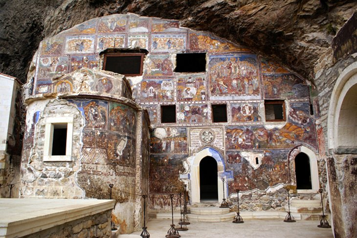

Турізм в Турції

1 - Aya Sofya

Прославлений як одно з найкрасивіших будівель у світі, заворожливий візантійський музей Айя Софія (Hagia Sophia) є відмінним місцем для відвідування не просто в Стамбулі, а і в усій Туреччині. Його приголомшуюча зовнішність оправлена мінаретами, доданих після завоювання Османа. Цей пам'ятник обов'язково повинен відвідати кожен турист !
2 - Ephesus

Руїни Ефеса - місто з коллосальними монументами і дорогами з мармуровими колонами. Це одне з найповніших, все ще існуючих римських міст в Середземноморському регіоні, це місце, де можна відчути, яким було життя за часів золотого століття Римської імперії. Огляд пам'яток займе не менше половини дня, якщо ж ви хочете заглянути глибше, не забудьте добре спланувати свою поїздку, для того що б не квапити себе.
3 - Cappadocia

Сюрреалiстичнi обривисті скельні долини Каппадокії - мрія кожного фотографа. З гребенів скель і гребенів пагорбів відкриваються хисткі панорами хвилеподібних скель або божевільних вершин. А якщо вам не хочеться вирушати в походи за видами, то це одно з кращих місць у світі, де можна покататися на повітряній кулі. Якщо місячного пейзажу недостатньо, щоб спокусити вас, то в цих долинах розташувалися церкви із скельними фресками Візантійської ери, коли ця область була важливим ранньохристиянським місцем.
4 - Палац Topkaki

Неймовірно розкішний палац Топкапи перенесе вас у фантастичний, розкішний світ султанів. Саме звідси султани Османської ери створили імперію, яка поширилася б на Європу і далі через Близький Схід і Африку. Інтер'єри з розкішною плиткою і розкішним ювелірним декором - це незабутній погляд на владу імперії Османа. Навколишні громадські сади колись були єдиним надбанням королівського двору, але тепер вони відкриті для публіки і забезпечують спокій від міських вулиць.
5 - Pamukkale
Одне з найвідоміших природних чудес Туреччини - чисті білі травертиновые тераси Памуккальского каскаду ("Бавовняний замок") спускаються по схилу, немов снігове поле на тлі зеленого ландшафту. На вершині цього кальцитного пагорба лежать величезні і плутані руїни древнього курортного міста "Римський Иераполис". Для отримання найкращих фотографій приходьте у сутінках, коли травертини світяться, коли сонце опускається нижче горизонту.
6 - Sumela Monastery
З його приголомшливим, самотнім оточенням, вбудованим в скелясту стіну, Сумельский монастир є головною пам'яткою для відвідувачів уздовж узбережжя Чорного моря. Кожен повинен побачити його інтер'єри, переповненими сліпучими і яскравими фресками, повинен кожен, хто приїхав в Туреччину. Монастир був уперше відкритий у візантійську епоху і був закритий тільки в 1923 році. Сьогодні, гуляючи по порожніх клітинах, легко уявити собі ізольоване життя ченців, що колись жили тут.